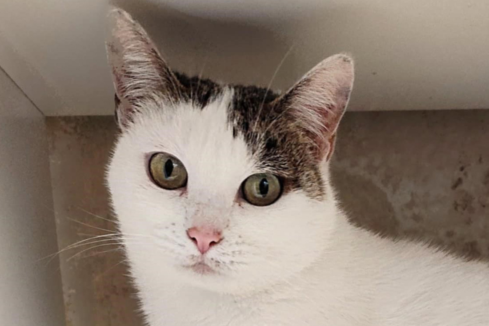
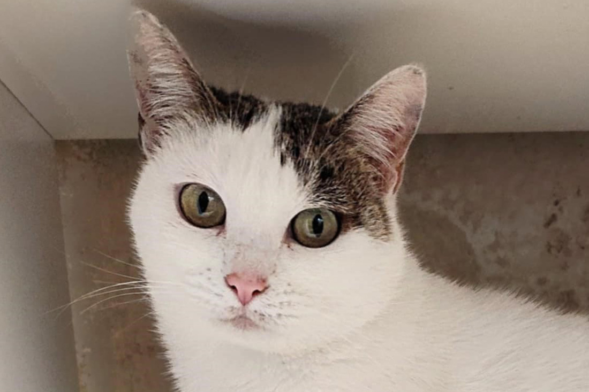

Mačke
Opis
Ena od značilnosti mačk je, da nikoli ne padejo na hrbet. To je zato, ker se lahko v zraku zasučejo s hrbta na trebuh v manj kot v dveh sekundah (1,6 s). K temu ogromno pripomore zelo razvit vestibularni aparat (čutilo za ravnotežje), ki bi ga po učinkovitosti lahko primerjali z giroskopom. Poleg tega razkorači noge, da s tem zveča zračni upor, zgradba njene hrbtenice, ki deluje kot vzmet, pa poskrbi, da je padec čim bolj ublažen. Tako so najpogostejše poškodbe, kadar do njih sploh pride, poškodbe spodnjega dela telesa in nog. Zanimivo pa je, da se mačke redkeje poškodujejo pri večjih višinah, saj imajo tako dovolj časa, da se odzovejo.
V pozni egipčanski dobi je boginja Bastet spremenila svojo podobo. Do takrat so jo namreč upodabljali kot žensko z mačjo glavo, v poznejšem obdobju pa so jo prikazovali kot mačko v celoti. Za Egipčane je bila podoba milosti in bogov, zato so tudi mačke po božje častili. Če je kdo poškodoval mačko, je bil za to strogo kaznovan. V bogatih družinah so jih krasili z nakitom, ko pa je mačka umrla naravne smrti so jo mumificirali in pokopali v sarkofagu v njeni naravni obliki. Eden od razlogov za čaščenje mačk je bilo dejstvo, da so lovile glodavce, ki so povzročali škodo na poljščinah, kar je prvi znani dokumentirani primer biološkega nadzora škodljivcev.
Prednosti in slabosti
- ne zahtevajo veliko oskrbe
- ne potrebujejo veliko prostora
- so zelo zabavne
- nekatere uničujejo pohištvo
- dostikrat povzročajo alergije
- nekatere so zelo glasne
Galerija


 
